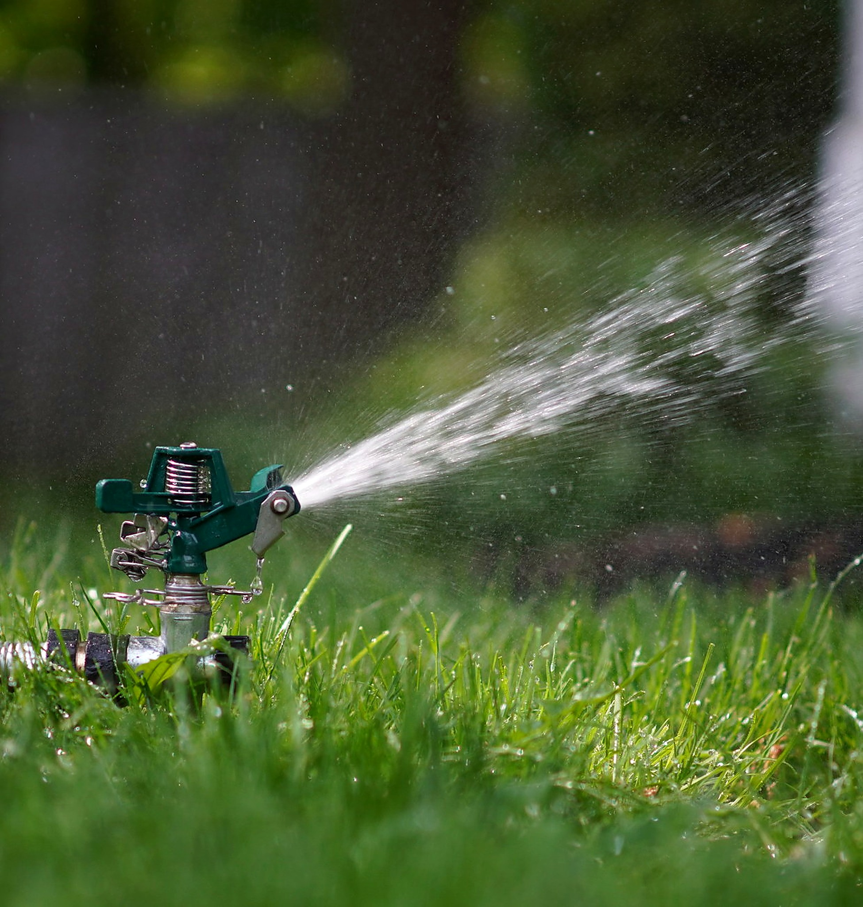
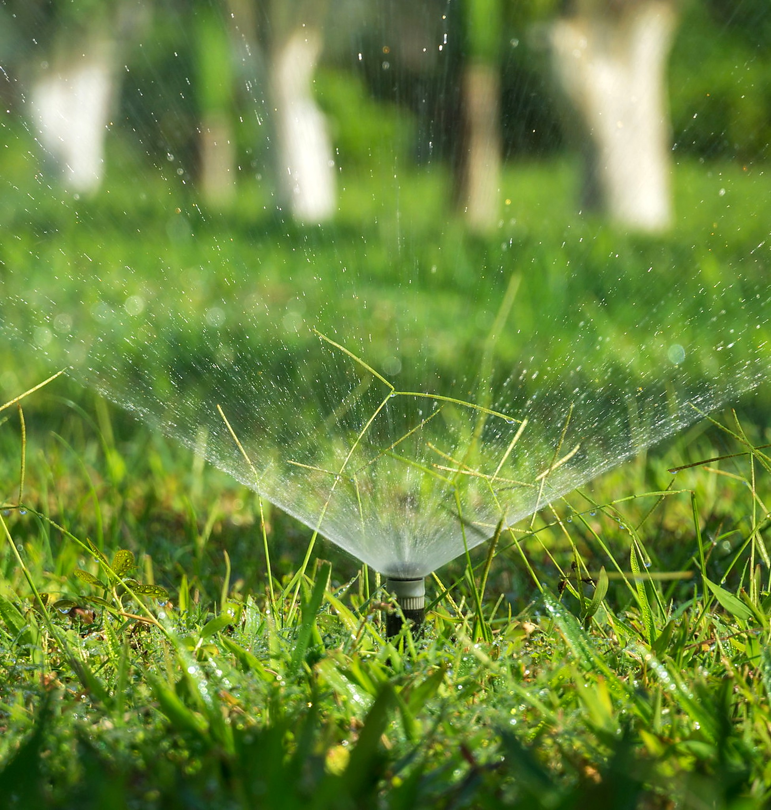
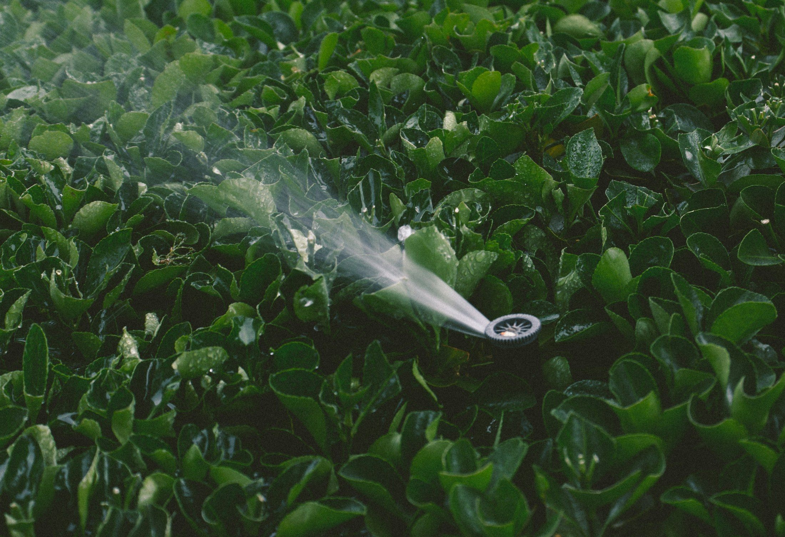

Agrotecnico certificato
Manutenzione di Impianti di Irrigazione tra Perugia e Siena
Esperienza, studio e cura del dettaglio.
Cosa dice un impianto che bagna male
Un impianto che non bagna più bene raramente è rotto tutto. Quasi sempre il problema è in un punto solo, e il primo lavoro è capire dove.
I sintomi dicono già molto. Una zona che resta secca mentre le altre bagnano è quasi sempre un ugello otturato, spostato o coperto dalla vegetazione cresciuta intorno. Un settore che non parte proprio è un problema elettrico o di elettrovalvola, non di acqua. La pressione che cala su tutto l'impianto indica una perdita a monte o un aumento di carico che l'impianto non regge più. Un ristagno sempre nello stesso punto è spesso una perdita interrata, non un eccesso di irrigazione.
La distinzione che conta è fra guasto e programmazione. Molti impianti giudicati rotti bagnano male perché fanno partire troppi settori insieme, o perché lavorano con tempi impostati anni fa e mai più cambiati. Un impianto così non ha bisogno di essere aperto: ha bisogno di essere riprogrammato.
Per questo il primo passaggio non è aprire il terreno, ma leggere come si comporta l'impianto quando lavora.

Tre interventi diversi

Riparazione di un punto
La riparazione lavora su un punto preciso. Ugelli, raccordi, un'elettrovalvola che non chiude, un tubo tranciato da uno scavo o dalle radici. Si isola il tratto, si interviene lì e il resto dell'impianto non si tocca: rifare quello che funziona è il modo più caro di risolvere un problema piccolo.
Centralina e programmazione
La centralina e la programmazione sono un lavoro senza scavo. Si rileggono i settori, si controlla che ognuno abbia acqua sufficiente da solo, si separano quelli con esigenze diverse e si aggiornano i tempi alla stagione. È l'intervento che cambia di più il risultato rispetto a quanto costa, ed è quello che quasi nessuno chiede.


Irrigazione degli alberi
L'irrigazione degli alberi è un capitolo a sé. Un albero non si bagna come un prato: l'acqua serve in profondità, distanziata nel tempo, e distribuita sulla proiezione della chioma, non al piede del tronco. Un albero collegato alla linea del prato riceve bagnature brevi e frequenti dove non gli servono, e continua ad avere sete mentre l'impianto risulta acceso.
Prima di muovere il terreno
Non scavare dove si vede l'acqua
L'acqua che esce da un tubo corre lungo lo scavo originale e affiora dove trova la via più facile.
La mossa che verrebbe naturale davanti a una perdita è scavare dove il terreno è bagnato. Spesso è il posto sbagliato: l'acqua che esce da un tubo corre lungo lo scavo originale e affiora dove trova la via più facile, che può essere a metri di distanza dal foro.
L'ordine che conviene è l'opposto, e si fa senza toccare il terreno. Prima si verifica cosa arriva al rubinetto — portata e pressione reali, non quelle che l'impianto aveva quando è stato installato. Poi si guarda la centralina e si azionano i settori uno per volta, per vedere chi risponde e chi no. Quello che resta dopo questi due passaggi è il punto da aprire, e a quel punto lo scavo è mirato.
Vale anche in senso opposto: prima di aggiungere settori o irrigatori a un impianto esistente si controlla se l'acqua disponibile basta a farli lavorare. Aggiungere a un impianto già al limite peggiora tutti i settori, non solo quello nuovo.
È la stessa logica del sopralluogo: si esclude, si restringe, e si apre il terreno una volta sola.

- Non aprire il terreno prima di aver provato portata e pressione.
- Non cercare la perdita prima di aver escluso valvola e programmazione.
- Non aggiungere settori a un impianto già al limite.
- Non giudicare rotto un impianto che è solo programmato male.
- Non far partire più settori insieme per finire prima.
FAQ
Domande su guasti, centralina e irrigazione degli alberi
Un impianto vecchio si può recuperare o va rifatto?
Si recupera più spesso di quanto si creda. Le parti che invecchiano male sono quelle a vista e quelle mobili — ugelli, irrigatori, elettrovalvole, centralina — e sono tutte sostituibili senza rifare le linee.
Il rifacimento diventa la strada quando le tubazioni hanno perdite in più punti, quando il tracciato non copre più il giardino perché nel frattempo è cambiato, o quando i settori sono stati progettati per un'acqua che oggi non c'è più. Lo si capisce dalle prove, non dall'età dell'impianto.
Un settore non parte mentre gli altri funzionano: cos'è?
Nella maggior parte dei casi non è l'acqua, è il comando. Un'elettrovalvola bloccata o bruciata, un cavo interrotto, un morsetto ossidato nel pozzetto: il settore resta chiuso mentre l'impianto crede di averlo aperto.
Si verifica azionando quel settore manualmente dalla valvola. Se aprendo a mano l'acqua arriva, il problema è elettrico e il terreno non va toccato; se non arriva nemmeno così, allora si cerca sulla linea.
Gli alberi hanno bisogno dell'impianto anche da adulti?
Un albero ben radicato in genere si sostiene da solo, e l'irrigazione permanente rischia di tenergli le radici in alto invece di lasciarle scendere.
Gli anni che contano sono i primi dopo la messa a dimora, e le estati particolarmente secche, in cui anche una pianta adulta può avere bisogno di bagnature profonde e distanziate. È una gestione diversa da quella del prato, e conviene che sia su una linea sua.